Bulletins neige
Des bulletins neige quotidiens pour les skieurs : où est la neige, ce qui arrive et où skier, d'après la carte de neige SnowScope et les stations de mesure. Chaque chiffre vient des données du jour.

Bonneval-sur-Arc, en Haute-Maurienne, commence décembre avec un très bon enneigement. Hauteurs du jour, prévisions, et ce que disent 46 hivers pour décembre.
Enneigement de l'Alpe d'Huez fin novembre 2026, ce que disent 46 hivers sur le 25 décembre, et quels quartiers et quelles pistes choisir pour les fêtes.

Piau-Engaly fin novembre 2026 : la neige du jour, la semaine qui vient, et ce que disent 46 hivers sur le 25 décembre dans la plus haute station des Pyrénées françaises.

Station par station, d'ouest en est : la neige du jour dans les Pyrénées françaises, espagnoles et andorranes, comparée à une fin novembre normale, et ce qu'il faut attendre pour décembre.

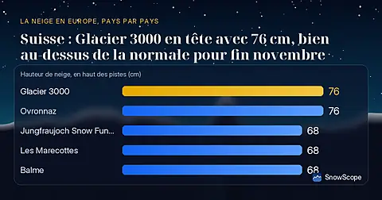
La Suisse affiche 76 cm à Glacier 3000 le 23 novembre, plus de neige qu'en neuf hivers sur dix. L'Oberland bernois et les Alpes du Valais ont reçu jusqu'à 144 cm en trois jours.

La Pierre Saint-Martin, prévisions neige : jusqu'à 42 cm attendus d'ici le 26 novembre (Pyrénées). À Astun, l'isotherme 0 °C monte entre 1 960 m et …
Alpe d'Huez a reçu 106 cm de neige fraîche en 72 heures au 23 novembre. D'autres poudreuses arrivent, mais attention à la pluie en milieu de semaine.

SnowScope classe Whistler Blackcomb premier dans l'Ouest canadien aujourd'hui, avec environ 153 cm sur le haut du domaine, devant Big White …
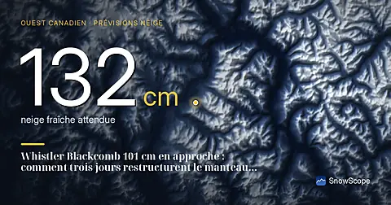
Whistler Blackcomb recevra 101 cm de neige nouvelle d'ici le 25 novembre, dépassant largement les normes de début de saison. Mount Cain Alpine Park domine la région avec 132 cm prévus.

Mount Washington Alpine Resort devrait recevoir 359 cm de neige nouvelle au cours des 14 prochains jours, avec les chutes les plus importantes la première semaine. Données du 22 novembre 2026.

Cauterets Cirque du Lys domine les Pyrénées avec 24 cm au sommet le 22 novembre. Les chutes de neige prévues le 25 novembre pousseront la couverture de 44 à 51 stations.

La Grave affiche 171 cm en versants supérieurs aujourd'hui, soit 68 % de la normale pour fin novembre. Les Alpes ont enregistré des gains importants ce week-end.
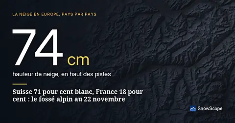
Les Alpes suisses couvertes à 71 pour cent blanc contre 18 pour cent en France au 22 novembre. Le Valais affiche 166 cm en 72 heures.

La Grave affiche 171 cm de neige, bien en tête de la moyenne typique de 82 cm pour fin novembre. Les Alpes françaises ont gagné 90 cm en 72 heures au 22 novembre.

Ce que disent 46 hivers passés sur la neige à Tignes : hauteur habituelle en bas, à mi-pente et au sommet du domaine Tignes – Val d'Isère, mois par mois, les semaines qui ne déçoivent jamais.

Où est tombée le plus de neige fraîche dans les Alpes ? Neige fraîche à Le Reposoir Chalet Neuf : 128 cm en 72 heures, dont 88 cm sur les dernières …
Piau-Engaly se situe à 1 762 m avec des pistes jusqu'à 2 527 m. Sur 46 hivers passés, la profondeur habituelle au sommet est de 88 cm en bas, 123 cm à mi-pente et 159 cm au sommet.

Gavarnie-Gèdre domine les Pyrénées avec 26 cm en altitude le 22 novembre. La couverture neigeuse a triplé en deux jours dans la région.

L'Alpe d'Huez Grand Domaine mois par mois : hauteur de neige habituelle en bas, à mi-pente et au Pic Blanc d'après 46 hivers passés, les semaines sûres, les décembres faibles et la tendance.

Prévisions de neige sur deux semaines pour l'Ouest canadien : Mount Washington Alpine Resort devrait recevoir 202 cm d'ici le 5 décembre, avec les plus fortes chutes le 24 novembre.

Mount Washington Alpine Resort domine avec 76 cm de neige nouvelle prévue au 24 novembre. Données du 21 novembre 2026.

150 cm en haut du domaine : voilà pourquoi Whistler Blackcomb est en tête de notre liste. La neige au sol, la neige des 72 dernières heures, la neige …

Pas de neige sur les pistes de l'Atlas le 21 novembre. Les hauts sommets conservent 1 cm au maximum. Les trois stations sont à nu ; la prochaine tempête peut prendre des semaines.

Pluie au-dessus de 2 980 m à Gavarnie-Gèdre aujourd'hui, mais la neige revient dans quatre jours. Comment s'habiller et quoi apporter face aux conditions changeantes des Pyrénées.

Niveau 0 °C dans les Alpes les prochains jours : 1 330–3 210 m. La limite de neige atteint son maximum à 2 900 m le 22 novembre. Risque de pluie sur neige aux stations d'altitude moyenne dimanche 22 novembre.

Orelle enregistre 74 cm le 21 novembre, conforme à la moyenne saisonnière de 64 cm. La France compte 12 530 km² de couverture neigeuse alors que de nouvelles tempêtes arrivent.

Quatorze jours de neige nouvelle dans les Alpes du 22 novembre au 5 décembre : les Deux Alpes reçoivent environ 94 cm, dont 73 % dans la première semaine. Données du 21 novembre.
Le manteau blanc de la Suisse s'est étendu de 6 410 km² en une semaine.

Bulletin neige Alpes, 21 novembre : Alpe d'Huez accumule 92 cm sur les pentes supérieures. Orelle domine la région avec 136 cm. De la neige fraîche attendue d'ici mardi.

La Pierre Saint-Martin reçoit 18 cm de neige fraîche dans les prochains jours. Les prévisions pour les Pyrénées à partir du 21 novembre montrent la majorité des chutes au-dessus de 1 900 m.
Les Arcs ont reçu 102 cm de neige fraîche au cours des 72 dernières heures avec 80 cm prévus d'ici le 24 novembre. Bulletin SnowScope du 21 novembre.
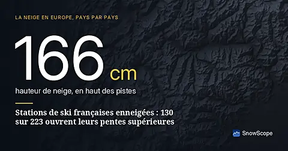
130 stations françaises ont du manteau neigeux le 20 novembre. Le massif du Mont-Blanc a reçu 297 cm en trois jours, avec d'autres chutes attendues.
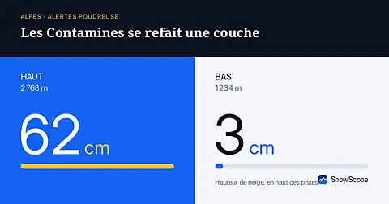
Les Contamines ont reçu 145 cm de neige en 72 heures ; les pentes supérieures en conservent 115 cm. D'autres chutes sont prévues pour le week-end.
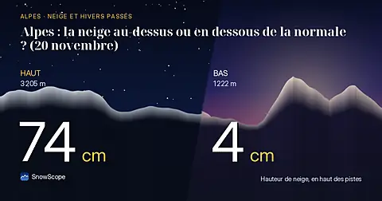
5 stations dans les Alpes, 46 hivers passés, une date : voici comment se situe aujourd'hui. Nettement au-dessus de la normale : 0. Confiance : bonne …
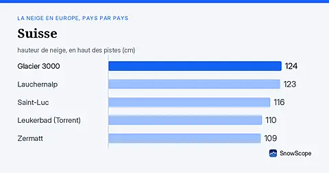
Glacier 3000 domine la Suisse avec 124 cm après 128 cm de neige en 72 heures. La couverture neigeuse a bondi à 64 % dans tout le pays le 20 novembre.

Les Arcs en tête avec 166 cm en altitude. La neige tombe jusqu'à dimanche. Les meilleures pistes sont en altitude et exposées au nord. Données du 20 novembre.

Un mélange de pluie et neige est attendu sur les Pyrénées au cours des trois prochains jours, l'isotherme 0 °C dépassant les sommets des stations dès dimanche. Entre 13 et 24 cm de neige nouvelle prévue en altitude.

Les neiges de début de saison dans les Alpes dépassent de 38 % la moyenne des 46 dernières années. Les pentes intermédiaires de La Plagne accumulent 36 cm de plus que d'habitude à cette date, avec de fortes chutes prévues jusqu'à dimanche.

Alpe d'Huez recevra le plus de neige dans les Alpes au cours des 72 prochaines heures. Beartooth Basin Summer enregistre les plus fortes chutes de neige fraîche aux États-Unis de l'Ouest et au Canada jusqu'à dimanche.

Choisissez une région, vos dates, votre budget et ce qui compte ; chaque station est classée avec la neige probable au départ, le forfait, l'hôtel et les repas par personne, les chalets à réserver, et un mode jeu.

Whistler Blackcomb affiche 136 cm en versants supérieurs cette fin de semaine, mais l'épaisseur diminue rapidement sous 1500 m. Planifiez vos descentes selon l'altitude. Données du 19 novembre.

Forfaits journée alpins dès 36 EUR : neuf stations comparées selon le prix, les kilomètres de pistes et la neige qu'elles reçoivent habituellement, pour trouver la meilleure journée de ski pour votre argent.
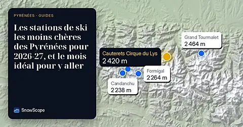
Des forfaits journée dans les Pyrénées à partir de 46 EUR : six stations en France, en Espagne et en Andorre comparées par prix, puis par l'enneigement qu'elles connaissent habituellement en décembre et en janvier.
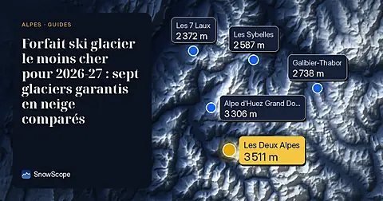
Ski sur glacier à partir de 68 EUR la journée : nous avons comparé sept glaciers en France, en Autriche, en Allemagne et en Suisse selon le prix et l'enneigement qu'ils affichent habituellement en décembre.

Six jours de ski à partir de 191 EUR : nous avons classé dix forfaits de ski pas chers en Europe par prix, puis vérifié 46 hivers passés pour savoir où la neige est fiable.

De 20 EUR pour un week-end d'ouverture à des forfaits de 6 jours avant Noël : un calendrier des meilleurs bons plans de début de saison dans les Alpes pour 2026, avec la neige à laquelle s'attendre.

La neige arrivera aux Pyrénées en deux vagues sur 14 jours, avec 91 cm prévus en altitude. La première semaine apporte 49 % du total ; la semaine 2 reste régulière. Données du 19 novembre.

La surface enneigée de la France est passée de 6 040 km² à 11 870 km² en une semaine. Le massif du Mont Blanc a reçu 240 cm en 72 heures au 19 novembre.
Les profondeurs de neige en Suisse le 19 novembre sont bien au-dessus de la normale. Glacier 3000 affiche 60 cm, plus du double de la profondeur typique à cette date. La semaine prochaine apportera jusqu'à 125 cm supplémentaires.

La surface enneigée a bondi de 560 à 1 710 km² entre le 17 et le 19 novembre. Piau-Engaly conserve la plus grande épaisseur de neige avec 15 cm en altitude le 19 novembre.

Combien de neige les montagnes vont-elles gagner ? Notre tableau montre les stations où la prévision annonce le plus de neige fraîche dans les 24 …

Mount Washington Alpine Resort affiche 104 cm sur les pentes supérieures aujourd'hui. Whistler Blackcomb domine la région avec 136 cm. Données du 18 novembre 2026.

Le niveau de congélation atteint 1 500 m à Banff Sunshine Village le 19 novembre. De la neige fraîche est tombée dans tout l'ouest du Canada au cours des 72 dernières heures, mais la pluie menace la poudreuse nouvelle.

Prévisions Canada occidental : 90 cm de neige nouvelle à Mount Washington au cours des deux prochaines semaines, avec 70 cm attendus fin novembre et début décembre.

Les Pyrénées vont accumuler jusqu'à 63 cm de neige nouvelle dans les 14 prochains jours, avec 70 % avant le 25 novembre. Données du 18 novembre.

De la neige fraîche est tombée sur les hautes montagnes françaises au cours des 72 dernières heures. Le massif du Mont-Blanc en a reçu le plus : 180 cm. Données du 18-11-2026.
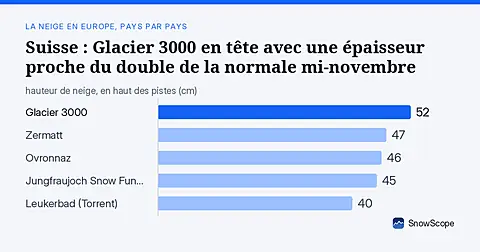
Les domaines skiables suisses affichent 142 % de la couverture neigeuse normale pour le 18 novembre. Glacier 3000 domine le classement avec 52 cm, avant l'arrivée de tempêtes majeures.

Prévisions de neige fraîche pour les Alpes jusqu'à début décembre. Saint François Longchamp en tête avec 228 cm attendus sur 14 jours, en commençant par 35 cm jeudi.

Bulletin neige Alpes 18 novembre : Orelle en tête avec 111 cm de neige en haut des pentes. Les prévisions du week-end annoncent 100+ cm de neige fraîche dans les grandes stations.

Aucune nouvelle neige attendue à Jbel Hebri ou Oukaïmeden au cours des 14 prochains jours. L'Atlas recevra moins de 1 cm au total jusqu'à début décembre, selon les prévisions du 18 novembre.

Orelle domine les prévisions mondiales avec 110 cm en 72 heures. L'Europe domine ; l'Amérique du Nord reste à l'écart. Données du 18 novembre.
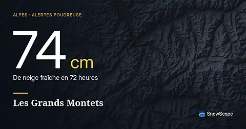
Les Grands Montets ont enregistré 74 cm de neige fraîche ces dernières 72 heures, avec d'autres chutes prévues pour les jours à venir au 17 novembre 2026.
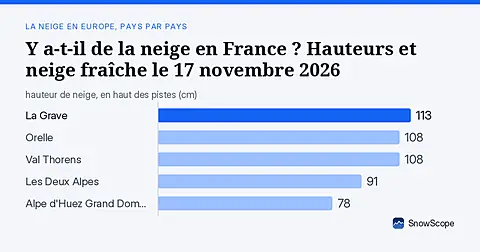
La neige arrive en France : jusqu'à 87 cm dans la semaine. Couverture, neige fraîche, stations et jours à venir en France le 17 novembre.

De la neige fraîche est tombée de manière inégale sur les montagnes suisses. Les Alpes valaisannes ont reçu 92 cm en trois jours ; l'Oberland bernois 54 cm. Données du 17 novembre.

Orelle enregistre 42 cm, proche des 53 cm typiques pour la mi-novembre. Des chutes de neige prévues sur les Alpes au cours des trois prochains jours.

96 cm de neige nouvelle prévus aux Arcs sur les trois prochains jours, avec aujourd'hui apportant les chutes les plus importantes ; simulation du 16 novembre.

Whistler Blackcomb a enregistré 76 cm de neige fraîche au cours des dernières 72 heures, et Mount Cain Alpine Park a également reçu 64 cm, en date du 16 novembre 2026.
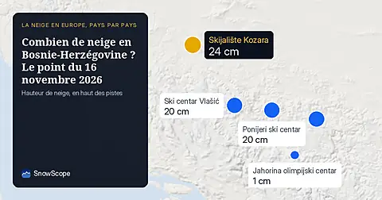
Neige en Bosnie-Herzégovine le 16 novembre : couverture, neige fraîche, hauteurs selon l'altitude, prochains jours et meilleures stations.

France ou Suisse ? Où la neige est meilleure le 16 novembre. Couverture, neige fraîche, stations et jours à venir en France le 16 novembre.
Neige en Allemagne le 16 novembre : couverture, neige fraîche, hauteurs selon l'altitude, prochains jours et meilleures stations.
Neige en Italie le 16 novembre : couverture, neige fraîche, hauteurs selon l'altitude, prochains jours et meilleures stations.

Neige en Norvège le 16 novembre : couverture, neige fraîche, hauteurs selon l'altitude, prochains jours et meilleures stations.
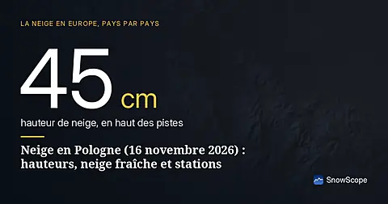
Neige en Pologne le 16 novembre : couverture, neige fraîche, hauteurs selon l'altitude, prochains jours et meilleures stations.

Neige en Roumanie le 16 novembre : couverture, neige fraîche, hauteurs selon l'altitude, prochains jours et meilleures stations.
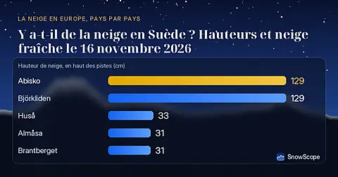
Neige en Suède le 16 novembre : couverture, neige fraîche, hauteurs selon l'altitude, prochains jours et meilleures stations.
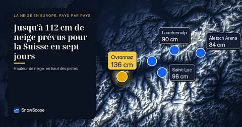
L'eau douce s'accumule dans les hautes Alpes au cours de la semaine à venir.

Orelle a atteint 31 cm le 16 novembre, en hausse de 17 cm en une semaine. Les Alpes devraient recevoir jusqu'à 103 cm de neige supplémentaire d'ici le 19 novembre.

Y a-t-il plus de neige qu'il y a un an ? Nous avons comparé aujourd'hui avec le 15 novembre de l'hiver dernier dans 4 stations dans l'Ouest canadien …

La Grave domine les Alpes avec 97 cm en versants supérieurs. La couverture neigeuse se réduit alors que le début d'hiver s'installe inégalement dans la région le 15 novembre.

L'Atlas ne retient que 20 km² de neige le 15 novembre, entièrement sur les hauts sommets jusqu'à 4 cm d'épaisseur. Pas de neige aux stations ; aucune n'est prévue jusqu'au 18 novembre.

Mount Washington Alpine Resort domine avec 158 cm au sommet le 15 novembre. La neige fraîche à Whistler Blackcomb et Mount Cain Alpine Park offre aussi d'excellentes conditions pour le ski de novembre.

Bulletin neige Pyrénées 15 novembre : pluie et neige mélangées à Cauterets, 7–19 cm sont tombés en 72 heures près du sommet. D'autres précipitations attendues d'ici le 18 novembre.

À Big White le 15 novembre, les pentes supérieures retiennent 68 cm près du sommet tandis que la base reste dégagée ; un gradient vertical extrême typique du début de saison.

Prévision de 79 cm de neige nouvelle aux Grands Montets du 16–18 novembre, principalement au-dessus de 2 000 m d'altitude selon la prévision de prévision du 15 novembre.

À Andermatt (2963 m), la prévision donne 75 mm de précipitations du 15 novembre au 20 novembre. Pendant les heures humides, l'isotherme 0 °C se situe

Pluie prévue alors que le niveau de congélation monte à 4 080 m ; la neige mesurée le 15 novembre est fine (moins de 20 cm) dans toutes les grandes stations des Pyrénées.

Les Deux Alpes : combien de neige fraîche ? 38 cm en 72 heures (15 novembre). Où est tombée le plus de neige fraîche dans les Alpes ? La Grave a reçu …

Courmayeur en tête du pronostic avec 88 cm en 72 heures ; l'épaisseur de neige atteint 142 % de la normale pour mi-novembre selon les données du 15 novembre.

Beaver Mountain propose des forfaits à prix fixe de 75 $ sans supplément en haute saison. Début décembre, l'enneigement est souvent faible ; visez la mi-décembre ou plus tard quand la neige est plus fiable.

Bridger Bowl facture 86 $ en ligne pour 2026/27. À mi-montagne, 50 cm le 15 décembre dans la moitié des hivers ; la semaine de Noël améliore les probabilités à 78 %.

Le domaine skiable de haute altitude du Colorado maintient son forfait remontée adulte à 49 $ pour la saison 2026-27 ; la neige à mi-montagne atteint 66 cm vers la mi-décembre lors d'un hiver typique. Données du 13 novembre 2026.

Sunlight près de Glenwood Springs fait face à un pari en début de saison en décembre. À la mi-décembre, vous pouvez vous attendre à 67 cm à mi-montagne, bien que seulement 72 % des hivers atteignent cette profondeur.

Le secteur mi-montagne de Timberline compte 132 cm de neige typique le 15 décembre. Les pentes supérieures atteignent 147 cm. Les forfaits journée entière commencent à 129 $ hors pointe.

Sept stations de ski à l'Ouest américain proposent des réductions en semaine en décembre. Ski Cooper économise 50 dollars par jour du lundi au vendredi, Mt. Baker 16,62 dollars en heures creuses. Les probabilités de neige à mi-montagne varient de 70 % à 93 % d'ici le 15 décembre.

Indy Base Pass 419 $, Indy+ 469 $, deux jours dans chaque station partenaire. Nous l'avons comparé aux prix journaliers vérifiés de sept stations Indy en décembre, et à leurs chances de neige.

Les forfaits adultes de Lookout Pass pour 2026-2027 sont à 63 $ en semaine avec réservation, 75 $ le week-end. À mi-montagne, on avait 20 in (50 cm) le 15 décembre dans 85 % des hivers passés.

Station locale près de Missoula à 2 296 m d'altitude avec forfaits remontées à 78 dollars en semaine. Les pentes intermédiaires et sommitales accumulent généralement 76–93 cm d'ici la mi-décembre. Données du 13 novembre 2026.
Le forfait 3 jours de Schweitzer offre trois journées pour 249 $ sur une crête qui s'élève de 1 221 m à 1 949 m. La neige à mi-montagne le 15 décembre atteint en moyenne 90 cm, avec 85 % des hivers au-dessus de 50 cm.

Krvavec mi-montagne a typiquement 13 cm de neige le 15 décembre sur 46 hivers, mais le sol nu dans 11 d'entre eux. Forfait journée 47 EUR.

Skiez sur 157 km de pistes balisées à Serre Chevalier, où le sommet de la montagne a 100 % de chances d'être enneigé d'ici la mi-décembre.

Turracher Höhe a 23 cm à mi-montagne le 15 décembre typique, mais seulement 39 % des hivers atteignent 30 cm là-bas à la mi-décembre. Données du 13 novembre 2026.

Hochkar en moyenne montagne a 38 cm typiquement le 15 décembre, et 63 % des hivers ont eu 30 cm ou plus cette semaine-là. Forfaits journaliers à partir de 32,90 EUR les jours calmes.

Les chances de neige à Idre Fjäll en décembre s'améliorent nettement après la mi-mois. Le 13 novembre, l'épaisseur typique à mi-montagne le 15 décembre est de 32 cm.

Brighton à partir de 72 $ contre Ski Cooper à 49 $ en semaine et Wolf Creek à 96 $ : les stations économiques de l'Utah et du Colorado comparées sur 46 hivers de neige en décembre.
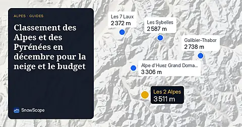
Dix stations de ski européennes classées pour leur rapport qualité-prix en décembre, avec Les 2 Alpes en tête avec 75 cm de neige à mi-montagne.

Brundage Mountain offre une neige fiable en début de saison près de McCall, en Idaho. La profondeur typique à mi-montagne atteint 77 cm vers la mi-décembre, avec des forfaits à partir de 65 $ certains jours.

Boí Taüll commence à 2 039 m et bat Baqueira Beret sur le prix du forfait, bien que la neige de début décembre demande un peu de patience.

Sälen en décembre : 28 cm un 15 décembre typique et 48 % des hivers avec 30 cm à la mi-décembre, moins qu'aux années 1980 ; Trysil, à côté, fait mieux.

Snow King se trouve au pied de Jackson. Vers la mi-décembre, la mi-montagne accumule généralement 71 cm. Données au 13 novembre 2026.

Orcières Merlette offre une base élevée à 1 826 m et un forfait 6 jours dès 227 EUR, ce qui en fait un choix fiable pour un séjour au ski en décembre.

Alpe d'Huez vaut-elle le coup en décembre 2026 ? Nous vérifions les probabilités de neige, le prix de départ de 58,00 EUR et comparons avec Les 2 Alpes.

Les forfaits slovènes sont les moins chers (Krvavec 205 EUR les 6 jours), mais la neige naturelle de décembre y est rare ; Lachtal, le Hochkar et le glacier de la Möll font mieux.

Loveland vend des forfaits en ligne à 60 $ jusqu'au 13 décembre, puis 159 $ à partir du 14 décembre. Les chutes de neige en début décembre moyennes sont de 50 cm à mi-montagne, mais la base est deux fois moins épaisse qu'en plein hiver.
Cauterets propose 25 km de pistes pour 46 EUR, mais notre historique d'enneigement montre que la meilleure chance d'avoir de la neige est la dernière semaine de décembre.

Lachtal coûte 62 EUR par jour et les enfants de moins de 7 ans skient gratuitement. À mi-montagne, il y avait 30 cm ou plus dans 72 % des décembres à partir de la mi-mois. Épaisseur de neige au 13 novembre 2026.

Les forfaits en ligne du White Pass démarrent à 69 $ hors pointe et 89 $ les jours de pointe, et la mi-montagne avait 20 in (50 cm) de neige le 15 décembre dans 87 % des hivers passés.

Skiez sur les 131 km de pistes de la Forêt Blanche en décembre avec un forfait six jours à 298 EUR.
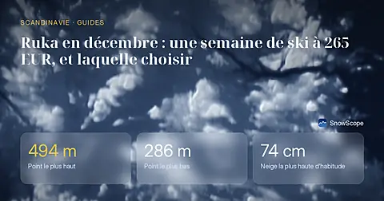
Le forfait 6 jours de Ruka coûte 265 EUR. Les chances de neige passent de 39 % en début décembre à 85 % à la semaine de Noël. Prévoyez la mi-décembre ou plus tard.